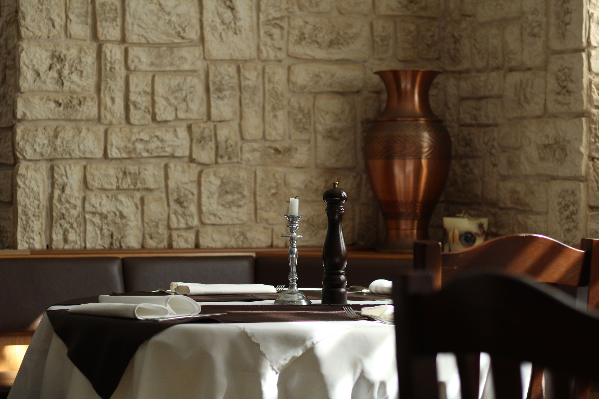
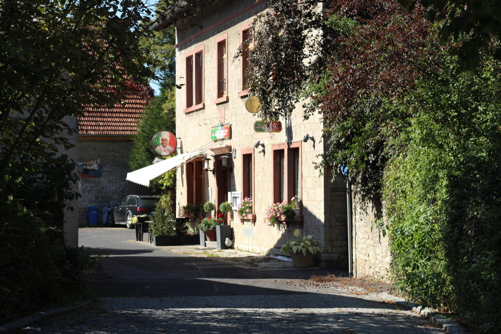
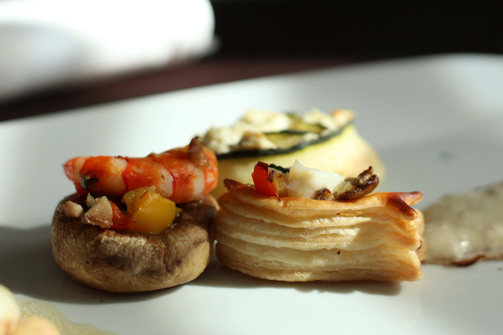
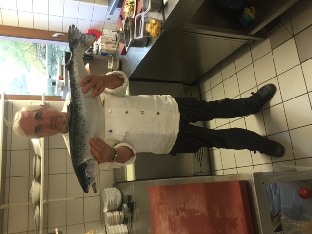

Der Biergarten
„Unser Biergarten mit altem Baumbestand lädt zum Verweilen ein.“
Alter Baumbestand, Kastanienbäume — und dazu die Küche des Hauses.
„Unser Biergarten mit altem Baumbestand lädt zum Verweilen ein.“
Sie sitzen gemütlich unter Kastanienbäumen und genießen eine Auszeit der besonderen Art. Lassen Sie sich kulinarisch verwöhnen.

Das Angebot des Hauses
Der Meisterkoch bereitet gemeinsam mit Ihnen ein 5-Gänge-Menü zu. Ziel ist es, die italienische Kochkunst Schritt für Schritt gemeinsam zu erlernen.
Gekocht wird mit frischem Fisch und Fleisch und den passenden Gewürzen aus dem Garten.
Biergarten & Gaststube
„Sie sitzen gemütlich unter Kastanienbäumen und genießen eine Auszeit der besonderen Art. Lassen Sie sich kulinarisch verwöhnen. Beispielsweise mit einem 3-Gänge-Menü.“

„Unser Biergarten mit altem Baumbestand lädt zum Verweilen ein.“
Alter Baumbestand, Kastanienbäume — und dazu die Küche des Hauses.
„Sollte das Wetter Ihre Pläne für den Biergartenbesuch durchkreuzen, dann kommen Sie herein in unsere geschmackvoll eingerichtete Gaststube. Wir halten Ihnen gerne einen Platz frei!“
Platzhalter · Vorschlag Vom Biergarten selbst liegt bislang kein Foto vor — der stärkste Satz Ihrer Seite hat also noch kein Bild. An dieser Stelle stehen künftig Ihre eigenen Aufnahmen von den Tischen unter den Kastanien. Bis dahin trägt der Abschnitt bewusst nur Ihre Worte; das Foto oben zeigt das Haus, nicht den Garten.
Aus der Küche
„Ob Fisch oder Fleisch, alles wird stets frisch zubereitet und sofort serviert.“
„Trüffel sind seine Spezialität.“
Zwei der Motive aus der eigenen Bildergalerie zeigen sie: auf der Vorspeise und auf dem Fischgang.
„Die Gewürze kommen aus unserem eigenen Garten und werden täglich frisch geerntet.“


Das Haus
„Ricci, unser Chefkoch, lässt sich immer etwas Besonderes für Genießer einfallen. Kreativität ist sein Markenzeichen.“
„RICCI und sein Team freuen sich auf ein Wiedersehen.“ Ristorante Da Ricci
Öffnungszeiten
Mittags und abends geöffnet. Montag und Dienstag ist Ruhetag — montags um 18 Uhr beginnt die Kochschule.
Platzhalter · Vorschlag Eine Hinweiszeile für kurzfristige Mitteilungen — geänderte Zeiten, Feiertage, Sonderöffnungen. Sie bleibt ausgeblendet, solange nichts anliegt, und lässt sich in zwei Minuten selbst ändern, ohne HTML zu bearbeiten.
Kontakt
Sie erreichen uns telefonisch oder per E-Mail. Für die Kochschule bitten wir um Kontakt zwei Wochen vor dem gewünschten Termin.